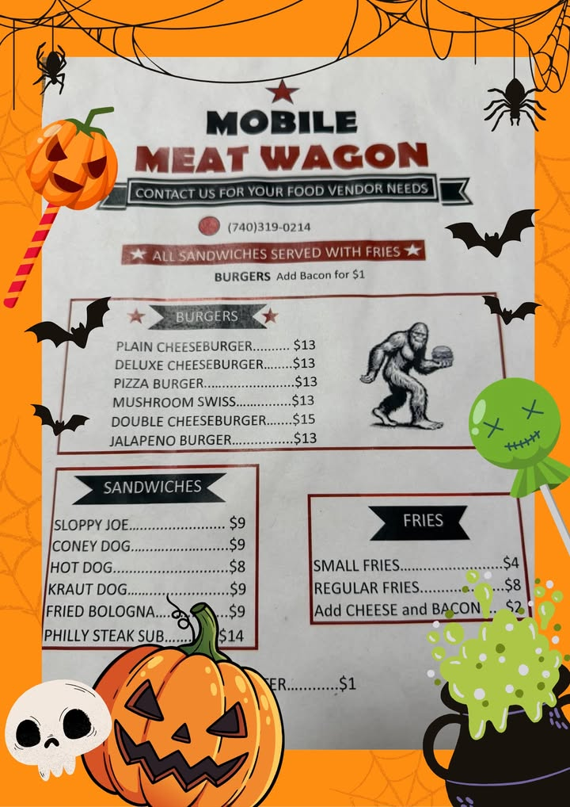
What better weekend for The mobile meat wagon and their bigfoot mascot than Halloween!? Join us for a menu so tasty, you'll scream!! Visit Coshocton, Ohio! @visitcoshocton @themobilemeatwagon
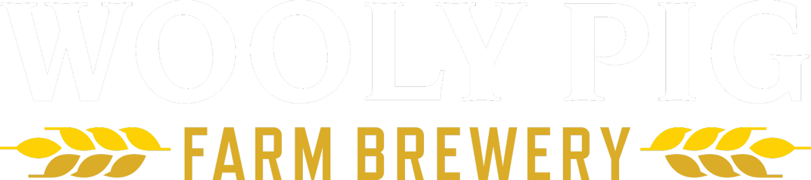
Posts from our Facebook page

What better weekend for The mobile meat wagon and their bigfoot mascot than Halloween!? Join us for a menu so tasty, you'll scream!! Visit Coshocton, Ohio! @visitcoshocton @themobilemeatwagon
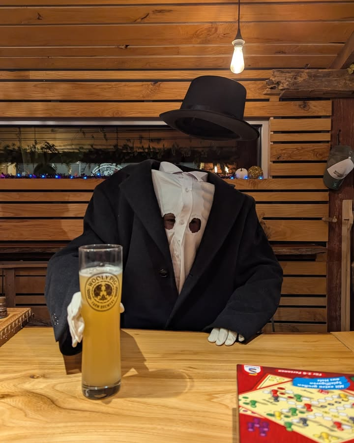
Put on your genius costume and come down to the brewery for trivia at 7pm on Wed. (10/28/26). Bonus points for individuals and teams who are filled with the Halloween Spirit! (Yes, I mean in costume.) #SportsGenius #musicgenius #generalknowledgegenius #bestnamewins #neverAI Visit Coshocton, Ohio! @visitcoshocton
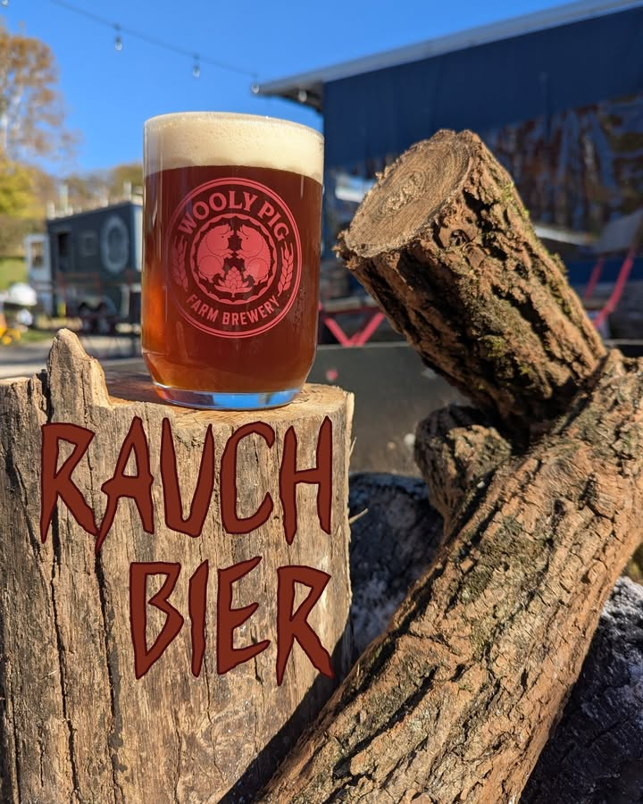
It's the time everyone hasd been waiting for (and by everyone, I mean, special people), the Rauchbier is on tap (and by Rauchbier, I mean the bacon beer). Visit Coshocton, Ohio! @visitcoshocton Ohio Craft Beer @ohiocraftbeer
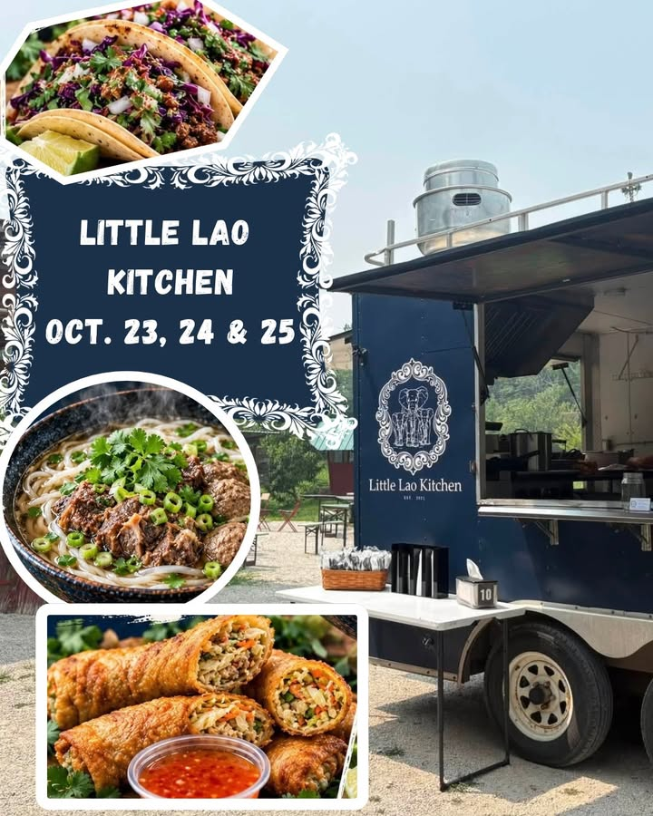
Come to the Wooly Pig this weekend for Little Lao Kitchen's final weekend of the season. Eggrolls, Lao street tacos and.....PHO SOUP! They're really trying to spoil us! #phosure #phoplease Friday: 4-8pm Saturday: 12-8pm Sunday: 12-6pm Visit Coshocton, Ohio! @visitcoshocton @little_lao_kitchen
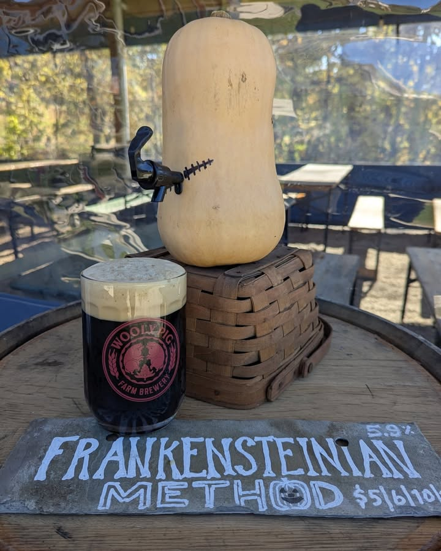
It's ALIIIIIIIIIIIVE! We've taken the dark, hoppy lager body of the Franconian Method and electrified it with the brain of a squash! Presenting the Frankensteinian Method: a fall beer with all of the pumpkin and none of the spice. Visit Coshocton, Ohio! @visitcoshocton Ohio Craft Beer @ohiocraftbeer @Northeast Ohio Craft Beverage News
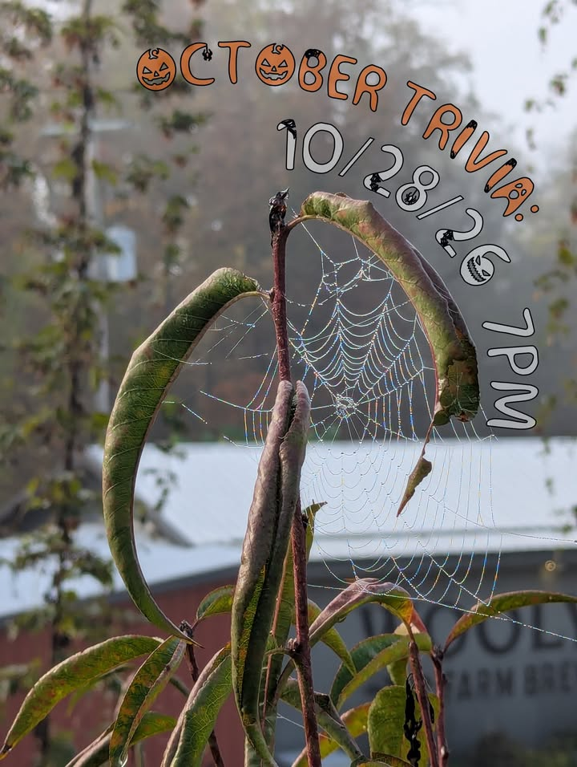
Save the date: We've pushed trivia this month back a week. Join us next Wednesday, 10/28, for our October trivia night. #clueless #bestnamewins #spidercider Visit Coshocton, Ohio!@visitcoshocton
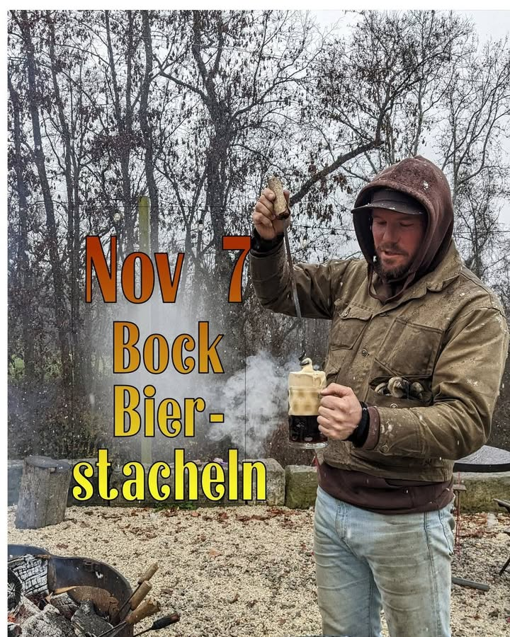
I've been getting lots of inquiries--the Bock Bierstacheln (a.k.a. hot beer poker event) will be Nov. 7, the first Saturday in Nov. Put it in your calendar today!! #redhotpoker #illbebock #youllbebocktoo Visit Coshocton, Ohio! @visitcoshocton Ohio Craft Beer @ohiocraftbeerNortheast Ohio Craft Beverage News
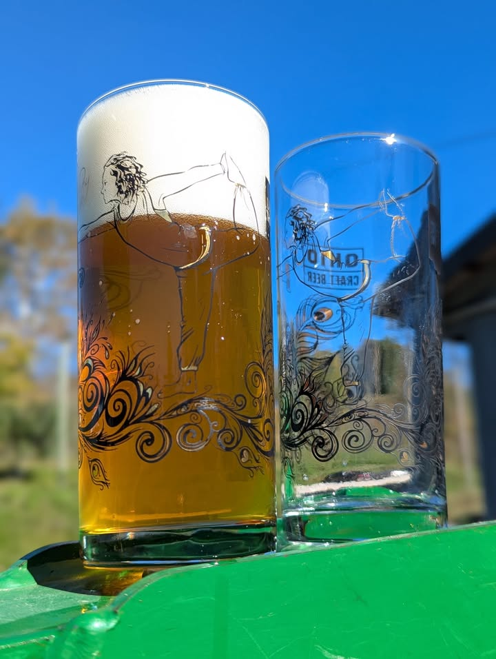
The Festbier tank is getting very low. This week will be your last chance (in 2026)! Is it a coincidence that we also still have some of these fabulous Ohio Pint Day glasses? I think not. #ohiopintday2026 #festbieristhebestbier Ohio Craft Beer Visit Coshocton, Ohio!
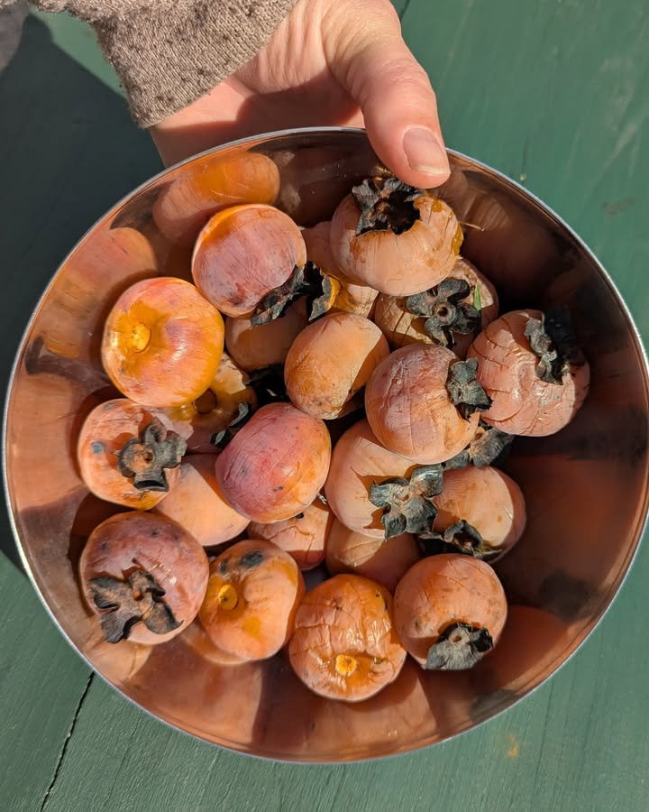
We're processing Wooly Pig Farm-grown American persimmons for this year's Holiday Lager! These jammy fruits are soft and sweet and native to Ohio. If you want to try some, there's a plateful of gorgeous persimmons on the bar for sampling today. #christmasiscoming #persimmonseason #teamworkmakesthedreamwork #drinkbeergrownhere Visit Coshocton, Ohio! @visitcoshocton @Ohio Craft Beer @ohiocraftbeer Northeast Ohio Craft Beverage News
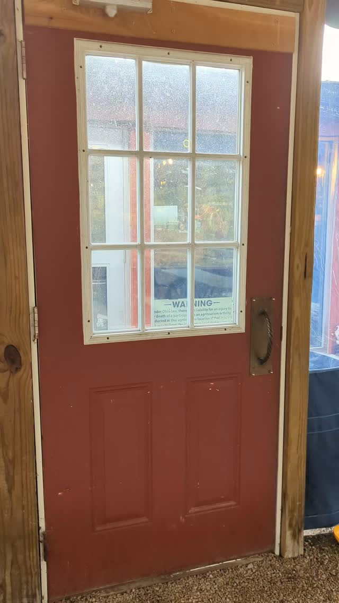
Just in time for fall weather, we're rolling down the new patio walls. #blueismycolor #drinklocal
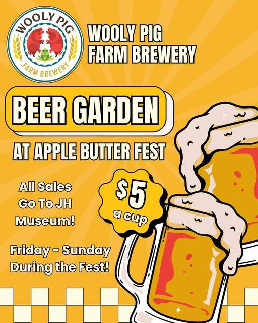
Wooly Pig is getting around this weekend! Friday-Sunday, enjoy the Apple Butter Stirring festival at Historic Roscoe Village with a Wooly Pig beer from the Johnson-Humrickhouse Museum beer garden! OR Head up to Fat Head's Brewery on Sat. for the Celebration of the Hops, an IPA festival! Pick your par-tay! Visit Coshocton, Ohio! @visitcoshocton @jhmuseum31 @fatheadsbeer
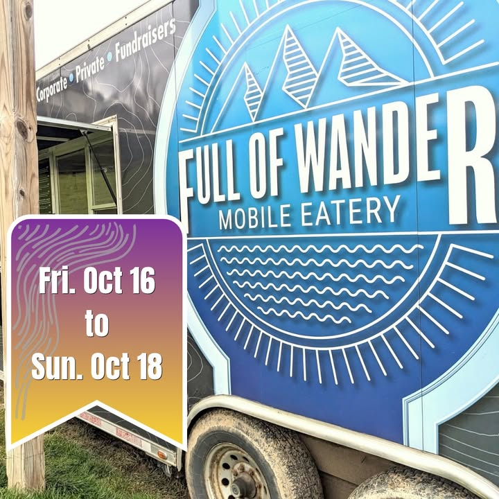
Another weekend, another great food truck! Full of Wander Mobile Eatery will be here this weekend to make you "Un Poco Loco" for a "Havana Ooh-na-na." And don't get us started on the S'more Pie!! #sandwichjokes #allwhowander #tastysandwichesclevernames @visVisit Coshocton, Ohio! @visitcoshocton @fullofwanderfoodtruck
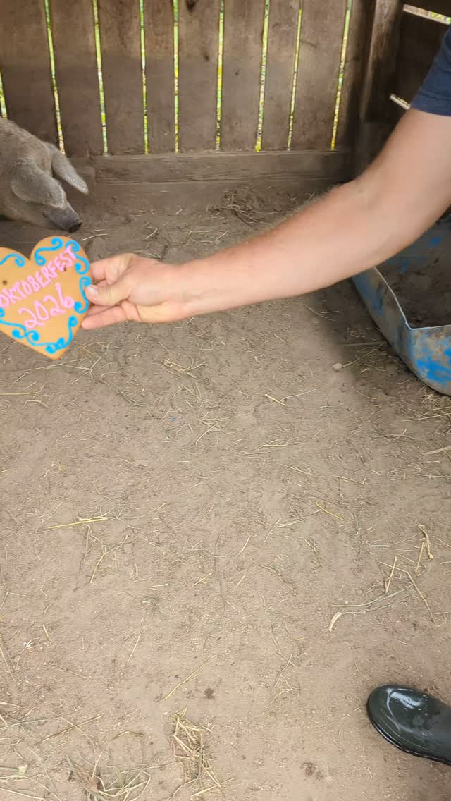
Aaaaaand that's a wrap! Oktoberfest 2026 was a blast! A big "danke" to everyone who played games, sported their trachten, wore edible necklaces, ate pretzels or drank a Festbier! Prost!!
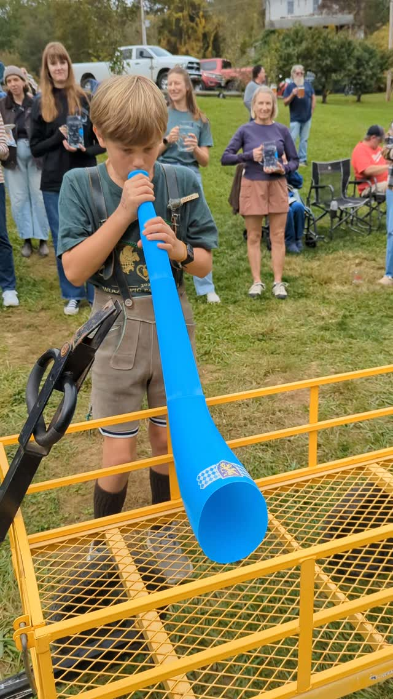
The only losers are those who don't try (or who stay home because of "the weather")! Games on the last day of Oktoberfest start soon !!
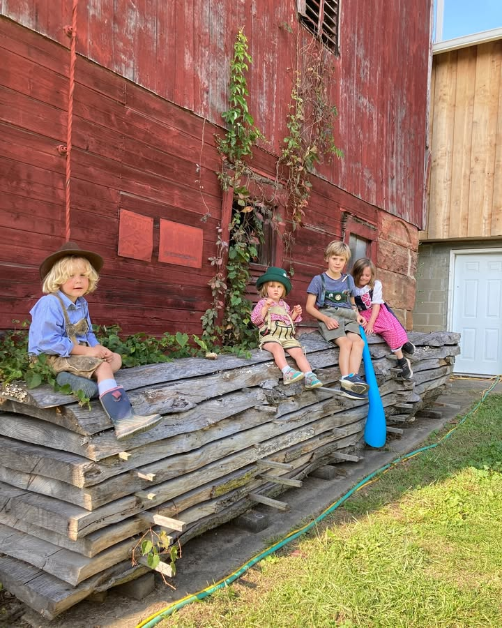
We'll have the tent up for Oktoberfest this weekend, but if you're looking for your own space, feel free to bring chairs and blankets for the lawn. No guarantees the log will be available... #festbiersithebestbier #dirndlsandlederhosen @vVisit Coshocton, Ohio! @visitcoshocton
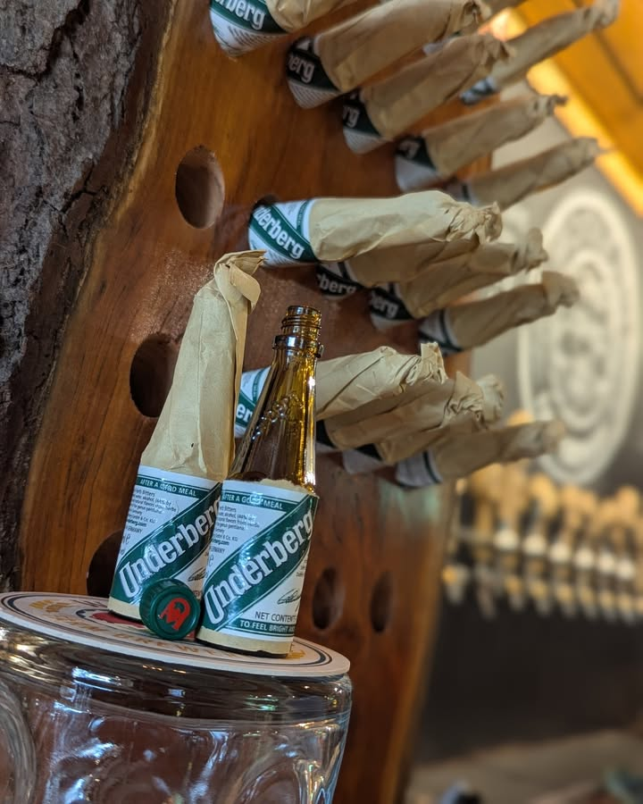
Have you noticed these cute little bottles at the brewery? Underberg is an herbal digestive--it helps calm your tummy and, maybe, just maybe make enough space for 1 more beer (or brat). They also have a loyalty rewards program--for only 672 caps, we can get a pocketwatch!!! #moregermanplease #moreunderberg #madeourownbottlerack Visit Coshocton, Ohio! @underbergamerica Underberg America Ohio Craft Beer
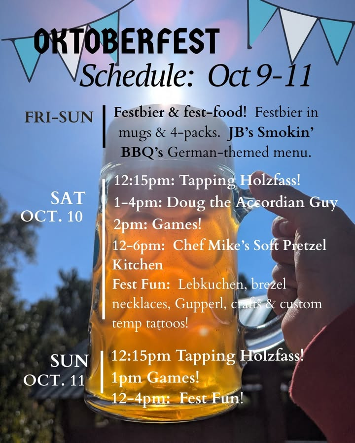
We're gearing up from another Oktoberfest party this weekend! Pull out your lederhosen and practice you quaffing! #lederhosenanddirndls #festbieristhebestbier #steinholding #hammerschlägen #kegtossing Schedule below: Fri-Sun, Oct 9-11: Festbier and JB's Smokin' BBQ Oktoberfest menu! Saturday Oct 10: 12:15pm Tapping Holzfass 1-4pm Doug the Accordian Guy 2pm Games! 12-6pm: Chef Mike's Soft Pretzel Kitchen Fest Fun: Lebkuchen, brezel necklaces, Gupperl, crafts & custom temp tattoos! SUN | OCT. 11 12:15pm Tapping Holzfass! 1pm Games! 12-4pm: Fest Visit Coshocton, Ohio! @visitcoshocton @Ohio Craft Beer @nNortheast Ohio Craft Beverage News
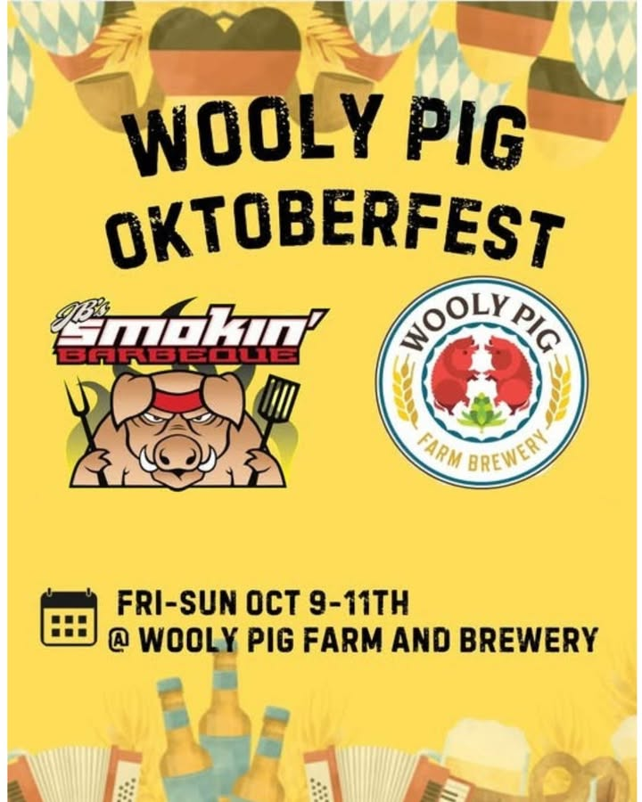
Weekend 2 food: JB's Smokin' Barbeque. will be here all weekend with brats, kraut, pierogies, balogna sandwiches and more! On Saturday only, Chef Mike will be working his hot pretzel magic--it's a good show and sooooo delicious! Guten Appetit!! #pretzelmagic #bratsandbeer #bratsnotbrats #festbieristhebestbier @Visit Coshocton, Ohio! @visitcoshocton@jbs_smokinbbq Ohio Craft Beer Northeast Ohio Craft Beverage News
Weekend 2 food: JB's Smokin' Barbeque. will be here all weekend with brats, kraut, pierogies, balogna sandwiches and more! On Saturday only, Chef Mike will be working his hot pretzel magic--it's a good show and sooooo delicious! Guten Appetit!! #pretzelmagic #bratsandbeer #bratsnotbrats #festbieristhebestbier Visit Coshocton, Ohio! @visitcoshocton @jbs_smokinbbq @Ohio Craft Beer Northeast Ohio Craft Beverage News
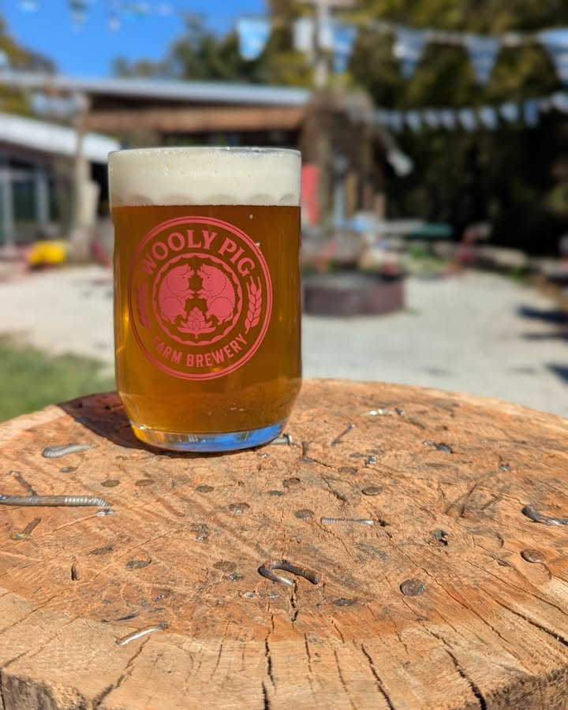
It's quiet around here today, but we're gearing up for another weekend of Wooly Pig Oktoberfest. Join us this weekend (10/10-10/11) for food and games and beer! #hammerschlagen #timetodenail #iykyk #bestbieristhebestbier.
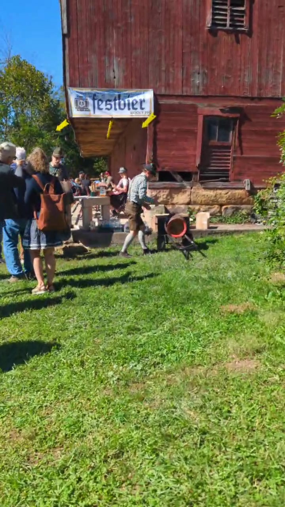
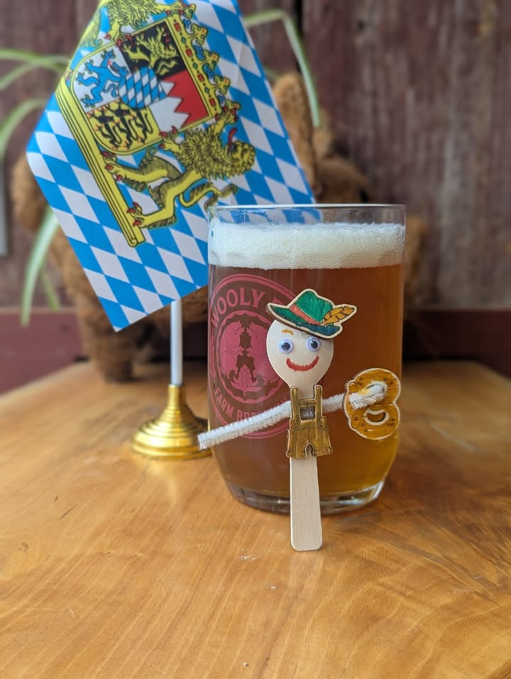
Ein prosit, ein prosit! #Oktoberfest #woolypig #festbieristhebestbier
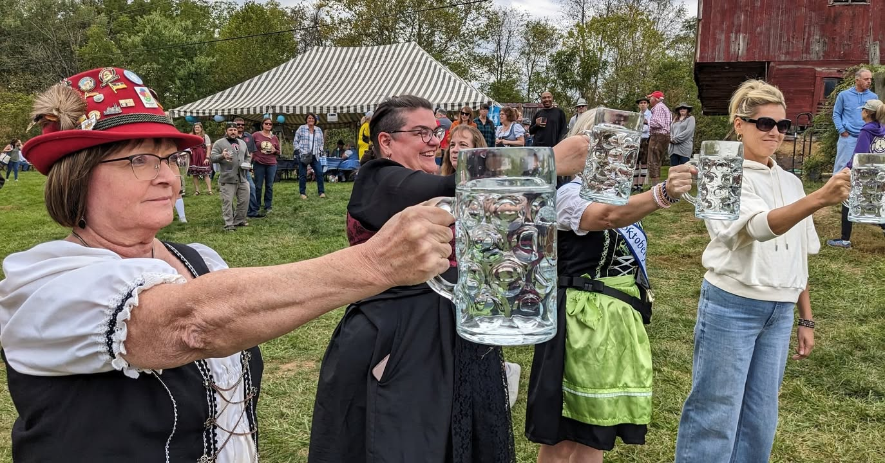
Rules of the stein-holding competition: Arms straight ahead, thumb curled under the handle, full liter, no splashing, smiling optional!! Join us this weekend to prove yourself in a tough field of competition! #festbieristhebestbier #masskrugmuscles #lookseasybutitsnot Visit Coshocton, Ohio! @visitcoshocton
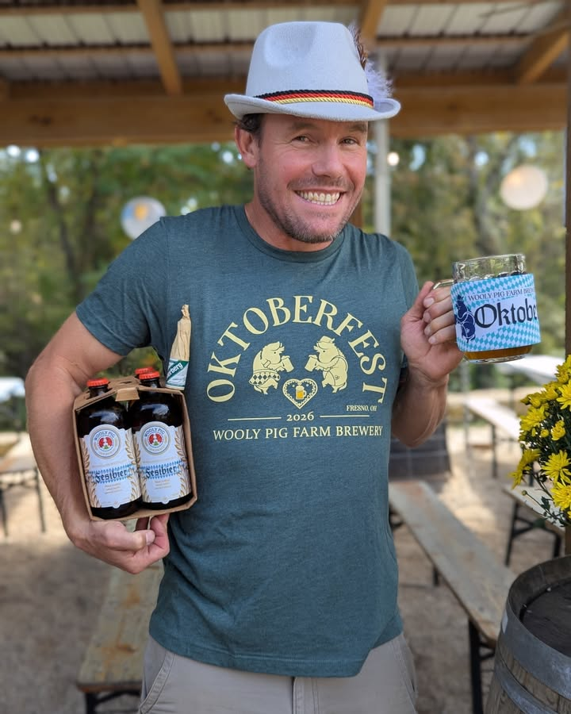
Can you spot all the fun, new treats we have lined up for Oktoberfest this year? This guy is pretty excited.... Tapping the festbier on Friday, 10/2! Visit Coshocton, Ohio! @visitcoshocton Northeast Ohio Craft Beverage News Ohio Craft Beer @ohiocraftbeer
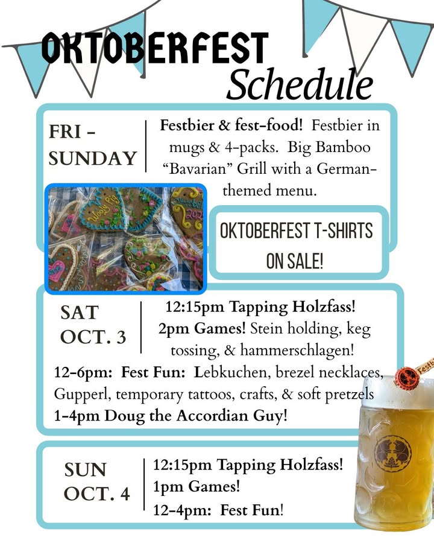
Oktoberfest schedule below. It sounds like the rain may be holding off for the party. It's gonna be nice! Visit Coshocton, Ohio! @visitcoshocton @Ohio Craft Beer
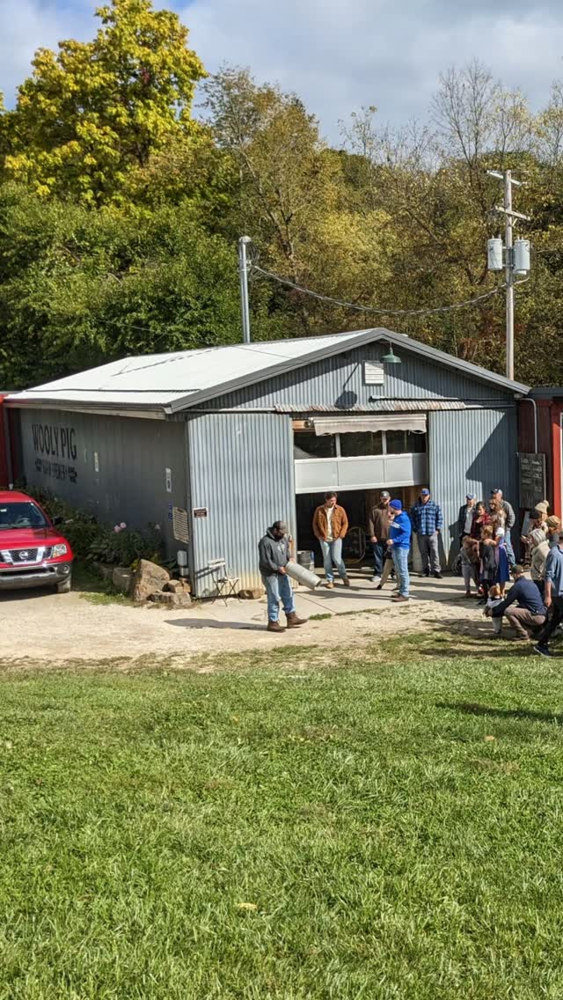
How far can you throw a keg? Test your keg-tossing skillz and stein-holding chops against the best at Wooly Pig Oktoberfest! Oct. 3-4 and Oct 10-12!!
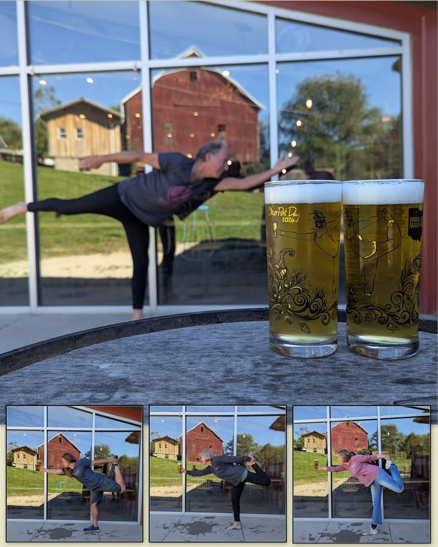
Stretch out for Ohio Pint Day! These gorgeous glasses are a fundraiser for Ohio Craft Beer/Brewers Association, and are only here for a limited time. We all tried out to be the model, but never did get a call-back.... Glasses will be available at Wooly Pig Wed., Sept 30. Visit Coshocton, Ohio! @visitcoshocton @ohiocraftbeer @quenchedandtempered
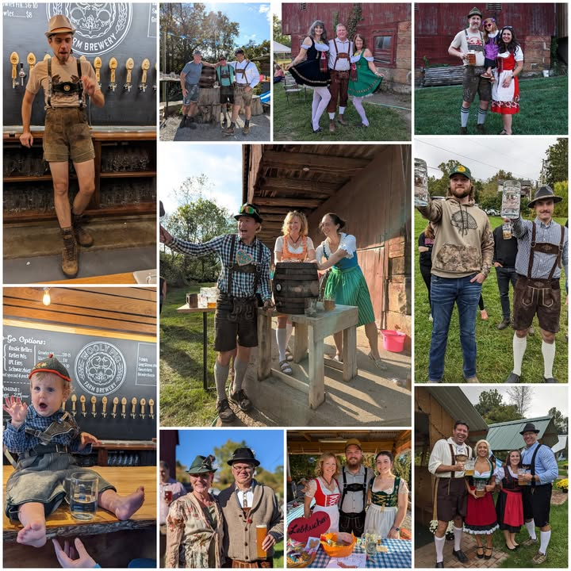
Have you heard of the newest cool trend in fashion? Oktoberfest-core! Cute dirndls and cozy (?) lederhosen are where it's at! Wooly Pig Oktoberfest is ahead of the curve! Make a fashion statement this weekend and next! Post your past photos below! #festbieristhebestbeer #lederhosen4life #DirndlLove Visit Coshocton, Ohio! Germania Singing & Sport Society @Ohio Craft Beer @visitcoshocton @ohiocraftbeer Northeast Ohio Craft Beverage News
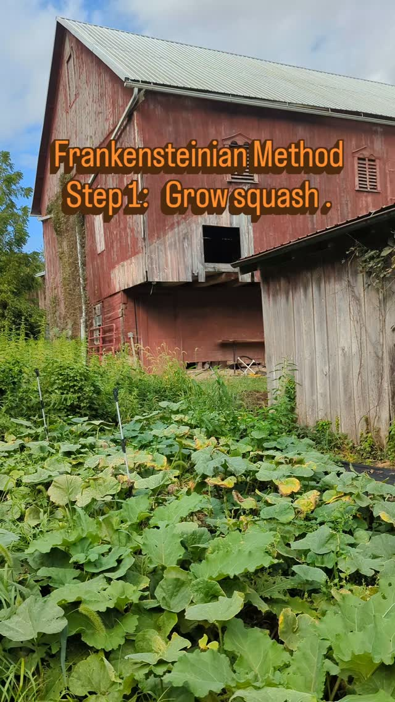
The first step of the Frankensteinian Method is complete. All the pumpkin, none of the spice.
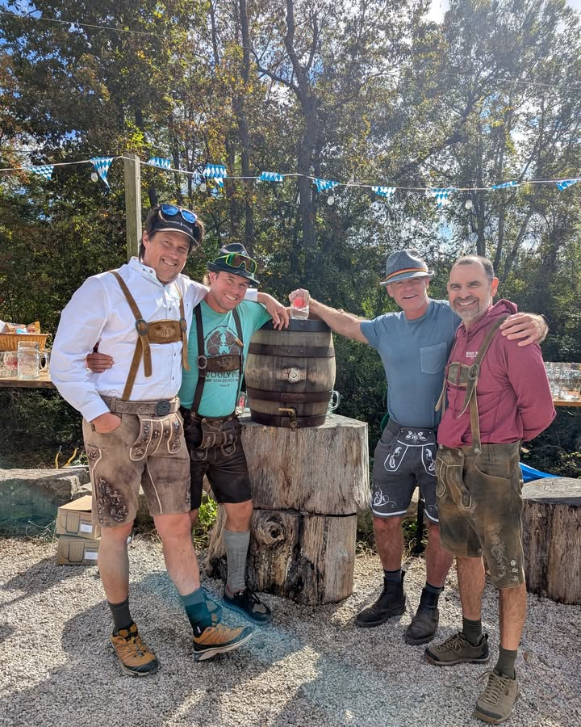
Time to dust off your dirndls and limber up your lederhosen! Wooly Pig Oktoberfest starts next Saturday, 10/3! Joing us for Festbier, games, food, snacks and crafts! #festbieristhebestbier Visit Coshocton, Ohio! @visitcoshocton Ohio Craft Beer Northeast Ohio Craft Beverage News